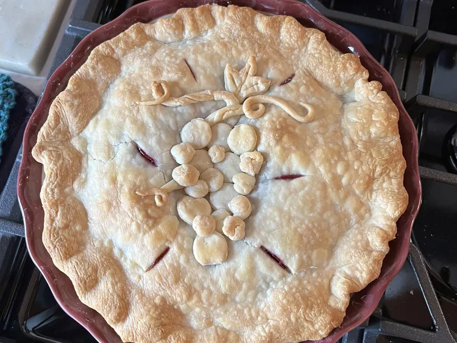

Concord Grape Pie

This old-fashioned grape pie recipe with sweet, juicy Concord grapes in a double crust is well worth the effort!
Ingredients
- 1 (14.1 ounce) package double-crust pie pastry
- 5 cups Concord grapes
- 1 ¼ cups white sugar
- ¼ cup all-purpose flour
- 1 pinch salt
- ¾ teaspoon lemon juice
- 1 ½ tablespoons unsalted butter, cut into small pieces
Directions
- Preheat the oven to 400 degrees F (200 degrees C). Place a sheet pan on the lower oven rack. Press one pie pastry into a 9-inch pie pan; set second pastry aside.
- Wash and stem grapes; squeeze grape pulp out of the skins into a large saucepan. Place skins into a large bowl and set aside.
- Mash a few grapes in the saucepan to release their juices. Place over medium-low heat and bring to a full boil.
- Run hot pulp mixture through a food mill to remove seeds. Add pulp to the skins in the large bowl and stir in lemon juice.
- Mix sugar, flour, and salt together in a separate bowl; stir into grape mixture and pour into the bottom pastry. Dot with butter and cover with second pastry. Flute the edges and cut little slits in the top crust for steam to escape.
- Place pie on the baking sheet in the preheated oven; bake until crust is golden brown and juice begins to bubble through the slits in the top crust, 45 to 50 minutes. Allow to cool completely before serving.